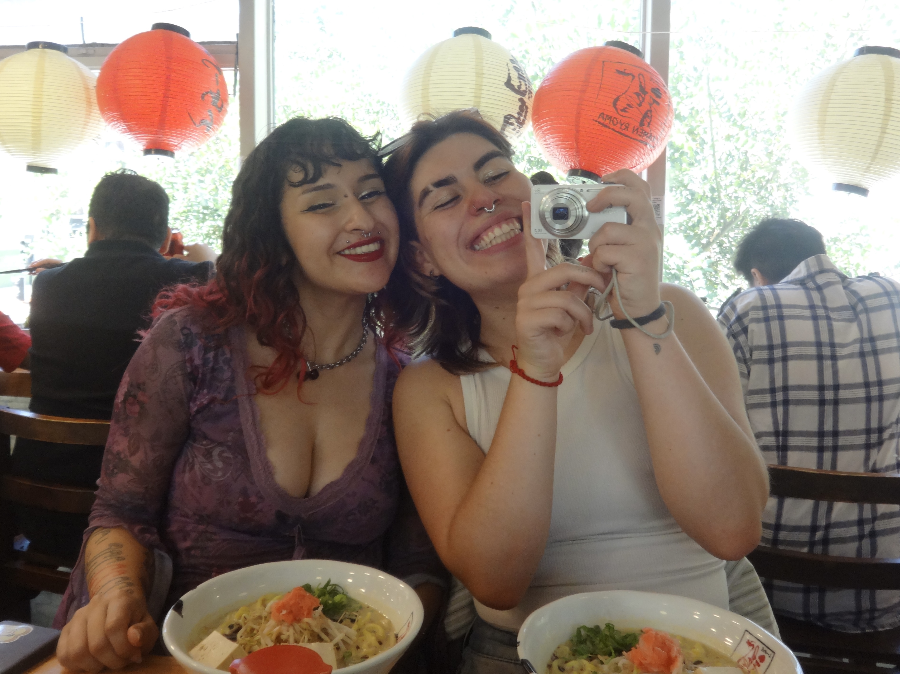

marzo 2026



nuestra primera cita! primera de muchas jijij :3 estaba tan nerviosa que me perdí en el metro
(cosa que normalmente no pasa, okei). la pasé demasiado biennn, tenía la wata toda revuelta de la emoción,
pero, a pesar de los nervios, me sentí extremadamente cómoda contigooo.
tenerte cerca, abrazarte, besarte y reírme contigo me hizo entender que todo estaba finalmente en su lugar.
sin importar los meses que pasen, siempre me emociona mucho reencontrarme contigo. mariposas en la wata cada vez!
te amo cantidades industriales, mi monita preciosa ♡
por siempre y para SIEMPRE